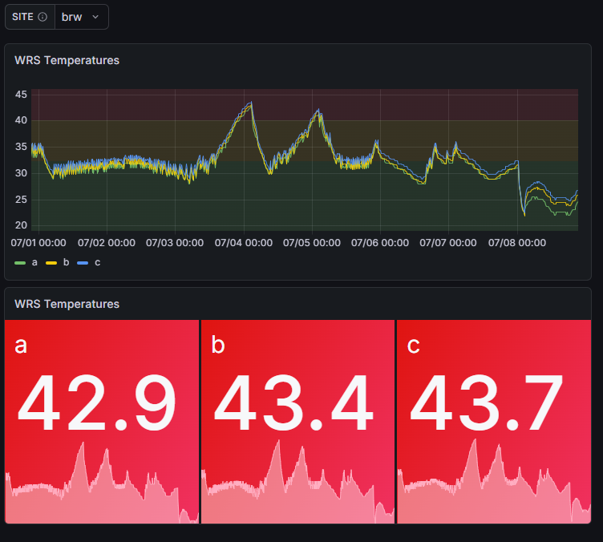

Weekly Highlights 20260701-20260708
SSM-WAAS-065 / DFO-2 Cutover Activities
SSM-WAAS-065 was released on 2/12/26 to upgrade the WAAS subsystems by performing the following hardware changes:
- Remove Legacy PCUs / Replace with new Power Distribution Units (PDUs) and DC Power Supplies (DCPS)
- Remove Legacy KVMs / Replace with new form-fit-function KVM
The DFO-2 Field Test Activities to implement limited operational capability (LOC) of L5 messaging are also being scheduled.
DFO-2 activities will be delayed...
- 7/7 13:38 - SSM-WAAS-065 - ZDC
all WREs to Maintenance and Shutdown for upgrade
to W7.442L; all WREs restored to Normal
at 7/7 19:06
- 7/7 16:58 - After the upgrade, ZDC WRE-B alarmed with some SE 309 Processor Power/Fan Failures, but did not recur...
18 WRS sites remain
| Target Cutover Date | Site | Site Type | Outage? (Y/N) |
|---|---|---|---|
| 7/7/2026 | ZDC - Washington, D.C. ARTCC | WRS2 | Y |
| 7/14/2026 | ZME - Memphis ARTCC | WRS2 | Y |
| 7/17/2026 | YQX - Gander | WRS5 | Y |
| 7/21/2026 | YYR - Goosebay | WRS5 | Y |
| 8/4/2026 | CDB - Cold Bay FSS | WRS2 | N |
| 8/4/2026 | YFB - Iqaluit | WRS5 | N |
| 8/10/2026 | YWG - Winnipeg | WRS5 | Y |
| 8/12/2026 | MMD - Merida | WRS5 | Y |
| 8/17/2026 | MPR - Puerto Vallarta | WRS5 | Y |
| 8/18/2026 | ZTL - Atlanta ARTCC | WRS2 | Y |
| 8/19/2026 | BET - Bethel FCT | WRS5 | Y |
| 8/21/2026 | FAI - Fairbanks AFSS | WRS5 | Y |
| 8/25/2026 | BIL - Billings TRACON | WRS5 | Y |
| 8/26/2026 | ZDV - Denver ARTCC | WRS2 | Y |
- We will not take an outage at some WRS sites to avoid service area impacts.
- Mexico sites will require rescheduling to accommodate new shipping plans... MMD delivered to consulate; MPR, MTP, MSD will be shipped from Embassy in CDMX, but still looking for options...
| Site | Site Type | Upgrade Start | Upgrade Complete |
|---|---|---|---|
| POC - San Diego TRACON | OM | 2/19/2026 18:54 | 2/19/2026 21:28 |
| ZTL - Atlanta ARTCC | WMS / WCN | 2/19/2026 22:05 | 2/20/2026 2:02 |
| ZLA - Los Angeles ARTCC | WMS / WCN | 2/24/2026 16:24 | 2/24/2026 19:56 |
| ZDC - Washington, D.C. ARTCC | WMS / WCN | 2/26/2026 14:04 | 2/26/2026 19:26 |
| ZAU - Chicago ARTCC | WCN | 3/3/2026 14:15 | 3/3/2026 16:22 |
| NOC - Warrenton ATCSCC | OM | 3/3/2026 16:47 | 3/3/2026 19:21 |
| SZ1 - Santa Paula | SGS | 3/4/2026 17:08 | 3/4/2026 20:59 |
| CM1 - South Mountain | SGS | 3/5/2026 16:45 | 3/6/2026 3:04 |
| AP1 - Napa | SGS | 3/10/2026 15:15 | 3/10/2026 18:27 |
| DX1 - Southbury | SGS | 3/12/2026 13:06 | 3/12/2026 18:33 |
| BR1 - Brewster (S97A) | SGS | 3/25/2026 16:03 | 3/25/2026 21:46 |
| BR2 - Brewster (S97B) | SGS | 3/26/2026 15:54 | 3/26/2026 21:09 |
| ZOA - Oakland ARTCC | WRS2 | 3/31/2026 16:31 | 4/2/2026 18:00 |
| ZMA - Miami ARTCC | WRS2 | 4/2/2026 0:17 | 4/2/2026 5:45 |
| ZLA - Los Angeles ARTCC | WRS2 | 4/14/2026 15:39 | 4/14/2026 20:35 |
| ZNY - New York City ARTCC | WRS2 | 4/15/2026 13:20 | 4/15/2026 17:23 |
| ZFW - Fort Worth ARTCC | WRS2 | 4/23/2026 17:52 | 4/23/2026 22:22 |
| ZBW - Boston ARTCC | WRS2 | 4/28/2026 12:56 | 4/28/2026 19:47 |
| ZAB - Albuquerque ARTCC | WRS2 | 4/29/2026 13:55 | 4/29/2026 18:11 |
| ZMP - Minneapolis ARTCC | WRS2 | 5/6/2026 13:39 | 5/6/2026 18:13 |
| ZSU - San Juan CERAP | WRS2 | 5/12/2026 12:59 | 5/14/2026 14:29 |
| ZHU - Houston ARTCC | WRS2 | 5/27/2026 13:45 | 5/27/2026 17:00 |
| ZAN - Anchorage ARTCC | WRS2 | 5/28/2026 16:43 | 5/28/2026 21:02 |
| ZSE - Seattle ARTCC | WRS2 | 6/2/2026 15:26 | 6/2/2026 18:28 |
| ZKC - Kanas City ARTCC | WRS2 | 6/9/2026 14:05 | 6/9/2026 18:43 |
| ZAU - Chicago ARTCC | WRS2 | 6/10/2026 13:31 | 6/10/2026 17:20 |
| ZJX - Jacksonville ARTCC | WRS2 | 6/16/2026 13:47 | 6/16/2026 19:27 |
| ZOB - Cleveland ARTCC | WRS2 | 6/17/2026 13:40 | 6/17/2026 16:25 |
| OTZ - Kotzebue FSS | WRS5 | 6/23/2026 18:43 | 6/23/2026 20:56 |
| JNU - Juneau AFSS | WRS2 | 6/26/2026 17:02 | 6/26/2026 19:26 |
| ZLC - Salt Lake City ARTCC | WRS2 | 6/30/2026 15:45 | 6/30/2026 18:38 |
| ZDC - Washington, D.C. ARTCC | WRS2 | 7/7/2026 13:38 | 7/7/2026 19:06 |
L1/L2 Bias Alarms
Perfmon down since 7/2, no L1/L2 Bias data...
6/25, 6/29, 7/3, 7/4 - BRW High Temperatures
- 6/25 09:38 - All BRW WREs alarmed with SE 309 Processor Power/Fan Failure indicating high temps
- 6/29 23:51 - All BRW WREs alarmed with SE 309 Processor Power/Fan Failure indicating high temps
- 7/3 20:30 - All BRW WREs alarmed with SE 309 Processor Power/Fan Failure indicating high temps
- 7/4 23:49 - All BRW WREs alarmed with SE 309 Processor Power/Fan Failure indicating high temps

7/1 - YWG Antenna-A Replaced
- 7/1 14:21 - YWG WRE-A to Maintenance
to replace antenna-A-- ref LCM 305009521; Control Powered and restored to Normal at 7/1 16:08
7/1 - SQM Alarm for PRN 10
- 7/1 16:43 - All C&Vs alarmed with SE 772 Signal Quality (SQM) PRN 10
7/6 - ZLA C&V Fault (CP2 Fail)
- 7/6 01:58 - ZLA C&V alarmed with SE 708
Process Failure Notice and CP2-O&M Comm
Fault; C&V Faulted ~1.5 min later with SE 12
Message Comparison Failure; Control Powers did
not clear issue; Operators requested CV0006
procedure -- LAD
1179920324...
- 7/6 01:59 - S15 Selected Source CV changed from ZLA->ZTL coincident with ZTL SE 740 Time to Alarm exceeded 133 (TTA) and SE 756 Message Type 0 triggered
- 7/7 18:32 - ZLA C&V returned to Maintenance
after CP2 replaced with spare; download Warm
Start from ZTL->ZLA and Restarted at 7/7
19:14; Verification at 7/7 19:16;
restored to Normal at 7/7 20:20
- When ZLA C&V returned to Maintenance, CP2 alarmed with SE 782 Processor Power/Fan Failure several times (last one occurred at 7/7 19:15) -- will monitor for 24 hours... no further SE 782s occurred overnight👍
7/7 - SZ1 L5 Offset CNO
- 7/7 22:26 - SZ1 GUS to Maintenance Mode
to troubleshoot L5 offset CNO as per SLES-- ref LIR 1179977424; restored to Backup at 7/7 22:49
Various Comm Impacts
* Only captures major / long-term comm outages
YQX Comms
- 7/2 02:57 - YQX Ring 1 PRI comms down hard; line cleared at 7/2 05:00 (~7415 seconds)
- 7/2 09:06 - YQX Ring 1 PRI comms down hard; line cleared at 7/2 11:29 (~8549 seconds)
- 7/2 12:33 - YQX Ring 1 PRI comms down hard; line cleared at 7/2 14:15 (~6127 seconds)
CDB Comms
- 7/3 08:57 - CDB ring 2 comms down hard; line cleared at 7/3 09:02 (~314 seconds)
- 7/4 06:38 - CDB ring 2 comms down hard; line cleared at 7/4 06:52 (~820 seconds)
- 7/5 19:47 - CDB Ring 1 comms down hard; line cleared at 7/5 20:04 (~1162 seconds)
Other Sites
- 7/1 07:08 - YWG Ring 1 ALT / Ring 2 PRI comms down hard; both lines cleared at 7/1 07:43 (~2056 seconds)
- 7/1 08:55 - SZ1 GUS all Ring 1 / Ring 2 comms down
hard for
MR-230522B-- ref LIR 1175209124; all lines cleared at 7/1 09:29 (~2016 seconds)- 7/1 09:29 - SZ1 GUS alarmed with SE 511 CV Source Switch ZDC to Unknown then back to ZDC after ~1 second
- 7/1 15:01 - CM1 Ring 1 ALT / Ring 2 PRI comms down
hard...
- 7/1 15:02 - YFB Ring 2 comms down hard...
- 7/1 15:59 - CM1 Ring 2 ALT comms flapping causing Ring 2 full comm down; line cleared up at 7/1 17:20 (~117 seconds total)
- 7/1 19:16 - CM1 Ring 2 ALT comms flapping causing Ring 2 full comm down; line cleared up at 7/4 20:09 (~162024 seconds total)
- 7/2 20:35 - CM1 Ring 1 ALT / Ring 2 PRI + YFB Ring 2 comms cleared (~106439 seconds)
- 7/1 22:48 - OTZ all comms down hard; all lines cleared at 7/1 22:51 (~148 seconds)
- 7/2 08:03 - FAI Ring 1 ALT / Ring 2 PRI comms down hard; both lines cleared at 7/2 10:04 (~7310 seconds)
- 7/2 20:42 - When YFB Ring 2 comms came back up after extended outage, line went back down hard; line came back up to flapping at 7/2 21:02 (~1215 seconds) until last SE cleared at 7/2 21:16
- 7/5 15:05 - YFB Ring 1 + YYR Ring 1 comms down hard; both lines cleared at 7/6 13:56 (~82235 seconds)
- 7/6 10:20 - CM1 Ring 2 ALT comms flapping; line cleared up at 7/6 11:58 (~349 seconds total)
- 7/6 15:02 - YFB Ring 1 + YYR Ring 1 comms down hard; both lines cleared at 7/6 15:12 (~616 seconds)
- 7/7 22:38 - OTZ Ring 1 ALT / Ring 2 PRI comms down
hard...
- 7/8 11:21 - All comms to OTZ ACS routers down hard -- OFFLINE; router comm faults cleared at 7/8 11:31 (~597 seconds)
- 7/8 05:05 - ZOA Ring 1 ALT / Ring 2 PRI comms flapping; last events cleared at 7/8 05:11 (~341 seconds total)
- 7/8 05:39 - All MX Ring 1 Ethernet down hard; all lines cleared at 7/8 05:41 (~107 seconds)
- 7/8 06:40 - All MX Ring 1 Ethernet down hard; all lines cleared at 7/8 06:42 (~102 seconds)
- 7/8 20:56 - HNL Ring 2 ALT comms down hard; line cleared at 7/8 21:00 (~211 seconds)
- 7/8 21:00 - HNL Ring 2 ALT comms down hard...
5/11/23 Mexico Ring 2 Down Hard...
- 5/11/23 17:01 - MX Ring 2 SatCom upgrade begins; MX Ring 2 OFFLINE until upgrade troubleshooting is complete...
- Targeting network upgrade in CY26
- 3/12/26 Disconnect order
List of current offline WREs
List of current offline WREs -- ref WAAS Status Monitor
All Depot shipments to Mexico are halted until the customs process can be finalized
Currently working to assess MX Inventory to determine equipment refresh and restoration needs...
- YQX WRE-B - 6/25/26-... - YQX WRE-B Receiver inits failing; Shutdown until troubleshooting -- ref LAD 1174867724...
- MMX WRE-C - 3/20/26-...
- MMX WRE-C to Maintenance and Restarted;
Receiver inits failing... unable to restore --
ref LIR
1133124724...
- 3/23 16:34 - MMX WRE-C Control Powered OFF until repair...
- MMD WRE-C - 10/20/25-... - Good Freq Std swapped into WRE-A to restore -- ref LIR 211505621
- MTP WRE-A - 9/23/25-...
- PCU Failed after power outage; PCU-B swapped
into WRE-A but DC output is non-functional...
ref LAD
1060696524
- Planning to swap PCU-C into WRE-A -- this will remove WRE-C from service, but allow us to restore WRE-A for analysis
- MTP WRE-B - 11/18/24-... - Receiver inits failing due to no DC Power from PCU; PCU swapped with PCU-A after PCU-A failed -- ref LIR 898330924
- MPR WRE-B - 5/3/24-... - Inits failing -- looks like a bad freq std; due to shipping issues, there is no spare Freq Std and no ETA to recover WRE-B... -- ref LIR 44170821

Major Events


Core I/F Status

Comm Events

Mexico Comm Status